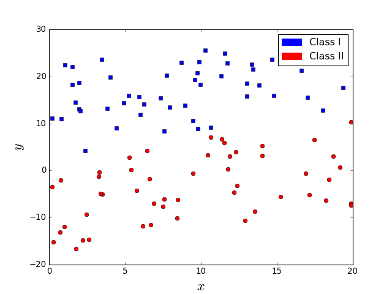
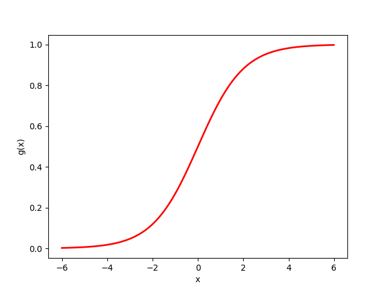
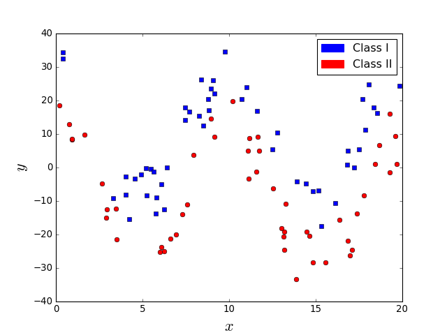
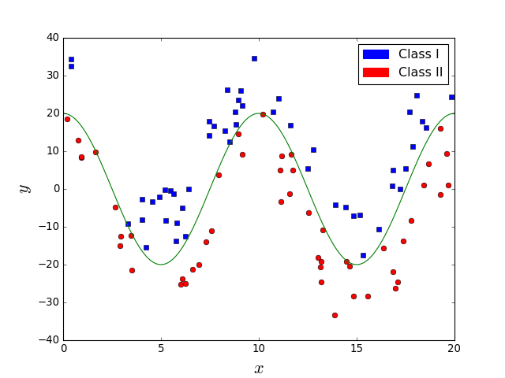
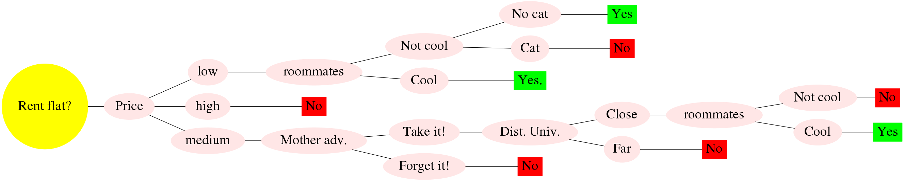

Machine Learning and Neural Networks
Roberto Santana and Unai Garciarena
Department of Computer Science and Artificial Intelligence
University of the Basque Country
Supervised learning
How to separate the classes?

Supervised learning
A line (hyperplane) is sufficient

Supervised learning
Are these two classification problems similarly difficult?

Supervised learning
No. In the right figure, the line does not perfectly separate classes.

Supervised learning
Linear Discriminant Analysis
- LDA learns a linear combinations of the features as a way to separate observations from the two classes.
- It is assumed that \(p({\bf{x}}|y=0) \) and \(p({\bf{x}}|y=1) \) follow a similar distribution.
- Furthermore, it is assumed that the two conditional distributions follow a normal distribution with the same covariance matrix \( \Sigma \) and means \( \mu_0 \) and \( \mu_1 \), respectively.
- Given a vector of features \( {\bf{x}} \) , the decision criterion is \(w {\bf{x}} > c \), where \(w\) and \(c\) have a closed-form expression that depends on the parameters of the normal distributions.
Supervised learning
Linear Discriminant Analysis
Computing the prediction with LDA: \[ p(y=1|x) = sigm \left( {\bf{w}}^T ({\bf{x}} - {\bf{x}}_0) \right) \]
Assuming that the a-priori probability of the two classes is the same: \[ \begin{align} w &= \Sigma^{-1} (\mu_1 - \mu_0) \\ {\bf{x}}_0 &= \frac{1}{2} (\mu_1 + \mu_0) \end{align} \]
Supervised learning
Logistic regression
Let the Bernoulli distribution be defined as: \[ Ber({\bf{x}},p) = p^{{\bf{x}}} (1-p)^{1-{\bf{x}}} \; \forall {\bf{x}} \in \{0,1\} \]
and the sigmoid function defined as: \[ g(\eta) = \frac{1}{1+e^{-\eta}} = \frac{e^{\eta}}{e^{\eta}+1} \]
Then the logistic regression classifier is defined as: \[ p(y \mid {\bf{x}}, {\bf{w}}) = Ber(y, g({\bf{w}}^T {\bf{x}})) \]
K. P. Murphy. Machine learning. A probabilistic perspective. MIT Press. 2012.
Supervised learning
Characteristics of the logistic function
- The output of the sigmoid (logistic, or logit) function is always in \([0,1]\).
- \(g(-\infty)=0\), \(g(\infty)=1\), and \(g(0)=0.5\).
Characteristics logistic regression
- It is a classification method, not a regression method.
- Works well for linearly separable problems.
- Multinomial logistic regression is a classification method that generalizes logistic regression to problems with more than two classes.
Logistic function

Supervised learning
What about the problem in the left figure. Is it easier? Does a line suffice in this case?

Supervised learning
It is easy but a line is not sufficient.

Supervised learning
Decision Tree
Decision Trees: How does it work?
- Each internal node corresponds to a test of the value of one of the input attributes \(A_i\) and the branches from the node are labeled with the possible values of the attribute.
- Each leaf node in the tree specifies a value to be returned by the function.
- A learning algorithm is used to extract the tree structure from the data.
S. Russell and P. Norvig. Artificial Intelligence. A Modern Approach. Third Edition. Pearson Press. 2010.
Supervised learning
Decision Trees
- A decision tree represents a function that takes as input a vector of attribute values and returns a decision (a single output value).
- It reaches its decision by performing a sequence of tests.
- Each internal node corresponds to a test of the value of one of the input attributes \(A_i\) and the branches from the node are labeled with the possible values of the attribute.
- Each leaf node in the tree specifies a value to be returned by the function.
- For many problems, the decision tree format yields a nice, concise result .
S. Russell and P. Norvig. Artificial Intelligence. A Modern Approach. Third Edition. Pearson Press. 2010.
Renting a shared flat in Donosti
| Criteria/Flat | F1 | F2 | F3 | F4 | F5 | F6 | F7 | F8 | C1 | C2 | C3 |
|---|---|---|---|---|---|---|---|---|---|---|---|
| Price | high | low | med. | high | low | med. | med. | high | med. | high | low |
| Distance to University | far | far | close | close | close | close | close | close | far | far | close |
| Parking | no | no | no | no | no | yes | no | no | no | no | yes |
| Cool Roommates? | cool | cool | cool | no | no | cool | cool | cool | cool | cool | no |
| Flat owner | nice | nice | not nice | nice | not nice | not nice | not nice | ? | nice | ? | ? |
| Heating for winter | no | no | no | yes | yes | no | yes | yes | no | no | yes |
| Distance to Bus | close | close | close | far | close | close | far | far | far | close | close |
| Room space | med. | large | small | small | small | med. | small | small | med. | small | small |
| Noisy area | no | yes | yes | no | no | yes | yes | no | no | no | no |
| Mother advice | yes | ? | no | ? | no | yes | yes | no | yes | no | no |
| Cat | no | yes | no | no | yes | yes | no | yes | yes | no | no |
| Kitchen | small | small | large | med. | med. | small | small | med. | large | small | small |
| Distance to beach | far | far | close | close | far | far | far | far | far | far | far |
| Floor | 2 | 7 | 1 | 1 | 0 | 3 | 1 | 2 | 4 | 0 | 3 |
| Elevator | no | yes | no | no | no | no | no | no | no | yes | yes |
| Bars around | yes | yes | yes | yes | no | yes | no | no | no | yes | no |
| Did (Will) I like it? | no | yes | no | no | no | yes | yes | no | ? | ? | ? |
Renting a shared flat in Donosti
| Criteria/Flat | F1 | F2 | F3 | F4 | F5 | F6 | F7 | F8 | C1 | C2 | C3 |
|---|---|---|---|---|---|---|---|---|---|---|---|
| Price | high | low | med. | high | low | med. | med. | high | med. | high | low |
| Distance to University | far | far | close | close | close | close | close | close | far | far | close |
| Cool Roommates? | cool | cool | cool | no | no | cool | cool | cool | cool | cool | no |
| Mother advice | yes | ? | no | ? | no | yes | yes | no | yes | no | no |
| Cat | no | yes | no | no | yes | yes | no | yes | yes | no | no |
| Did (Will) I like it? | no | yes | no | no | no | yes | yes | no | ? | ? | ? |
Supervised learning
Decision Tree
Supervised learning
Learning decision trees from examples
- The algorithm to learn the decision trees (\(DT\_Learning\)) adopts a greedy divide-and-conquer strategy: always test the most important attribute first.
- The test divides the problem up into smaller problems that can be solved recursively.
- The most important attribute is the one that makes the most important difference to the classification of an example.
- The goal is to get to the correct classification with a small number of tests.
- To identify the most important attributes, different importance measures are defined.
S. Russell and P. Norvig. Artificial Intelligence. A Modern Approach. Third Edition. Pearson Press. 2010.
Supervised learning
Learning decision trees: Split metrics
- At each step, the DT learning algorithm finds the pair of attribute and cutting point which makes the maximal impurity decrease.
- Let \(p_i\) denote the probability of a class computed from the observations at a given node.
- Gini impurity: \[ 1- \sum_{i=1}^{c} p_i^2 \]
- Entropy: \[ - \sum_{i=1}^{c} p_i^2 log_2(p_i) \]
- Classification error: \[ 1 - \max_{i \in \{1 \dots c\}} p_i \]
Renting a shared flat in Donosti
| Criteria/Flat | F1 | F2 | F3 | F4 | F5 | F6 | F7 | F8 |
|---|---|---|---|---|---|---|---|---|
| Price | high | low | med. | high | low | med. | med. | high |
| Distance to University | far | far | close | close | close | close | close | close |
| Cool Roommates? | cool | cool | cool | no | no | cool | cool | cool |
| Mother advice | yes | ? | no | ? | no | yes | yes | no |
| Cat | no | yes | no | no | yes | yes | no | yes |
| Did (Will) I like it? | no | yes | no | no | no | yes | yes | no |
| Criteria/Value | p(class=yes) | p(class=no) | Impurity | Entropy | Error | <
|---|---|---|---|---|---|
| Price/high | p(class=yes)=0 | p(class=no)=1 | 0 | 0 | 0 | <
| Price/low | p(class=yes)=0.5 | p(class=no)=0.5 | 0.5 | \(-2*0.5^2*log(0.5) \) | 0.5 | <
| cat/yes | p(class=yes)=0.5 | p(class=no)=0.5 | 0.5 | \(-2*0.5^2*log(0.5) \) | 0.5 | <
| cat/no | p(class=yes)=0.25 | p(class=no)=0.75 | ? | ? | ? | <
Decision Tree learning algorithm
S. Russell and P. Norvig. Artificial Intelligence. A Modern Approach. Third Edition. Pearson Press. 2010.
Supervised learning
Learning decision trees: Variants of the algorithm according to split criteria
- Iterative Dichotomiser 3 (ID3) algorithm is based on Shannon entropy.
- C4.5 algorithm is based on Gain Ratio which is considered as a normalized Shannon entropy.
- Classification And Regression Tree (CART) algorithm is based on Gini index.
Ensembles: What is it?
- An ensemble is a combination of classifiers of the same type.
- The classifiers are expected to be different in the structure and diverse.
- Different methods for creating ensembles of classifiers exist. Two of this types are Boosting and Bagging ensembles.
- Boosting: Each classifier is trained using samples that have been misclassified by the previous classifiers in the ensemble (e.g. Adaboost).
Supervised learning
Bootstrap Aggregating (Bagging)
- Sets of observations (bootstrap samples) are chosen from the data with replacement (some observations can be in more than one bootstrap sample).
- From each bootstrap sample, a classifier is learned.
- The predictions computed from all samples are combined.
- It is a variant of ensemble classifiers, is a method to reduce the variance of the prediction.
- When used with decision trees, usually the same greedy algorithm is used to learn each tree, producing similar split points.
L. Breimann. Bagging predictors. Machine Learning. Vol. 24 No. 2. Pp. 123--140. 1996.
Bagging

Figure credit. Sebastian Raschka. How does the random forest model work?
Random forests: What it is?
- A random forest is an ensemble of decision trees each one learned on a bootstrap sample.
- Each tree is learned on a bootstrap sample.
- Each is computed using only a subset of variables selected randomly.
- A large number of tree is generally used.
L. Breimann. Random Forests. Machine Learning. Vol. 45 No. 1. Pp. 5--32. 2001.
Random forests: How does it work?
- In each sample, at the time of learning a tree, a subset of all variables is selected to determine the best split.
- The class prediction for an example is the majority class among the decision trees classifiers.
- Notably improves the accuracy of decision trees classifiers.
- However, the interpretability of the random forest is very limited.
L. Breimann. Random Forests. Machine Learning. Vol. 45 No. 1. Pp. 5--32. 2001.
Random forests: Variable importance
- Variable importance: A relevant concept in machine learning. It is a measure of how important each variable is for the classification process.
- Two variable importance measures are usually computed from random forests:
- Based on the Gini, or other information-based measures.
- Based on permutations of the variables in the trees and the quantification of their effect on the classification error.
- Local variable importance can be also computed since son variables are relevant to classify subsets of observations.
Random forests: Variable importance

Figure credit. Sklearn. Feature importances with forests of trees.
Supervised learning
Random forests: Other uses
- Variable selection
- Survival analysis (survival random forests)
- Clustering
- Imputation of missing data
- Visualization
Evaluating classifiers
| ind. | X0 | X1 | X2 | X3 | Class | Prediction |
|---|---|---|---|---|---|---|
| 1 | 0 | 0 | 1 | 0 | -1 | 1 |
| 2 | 1 | 0 | 0 | 0 | -1 | 1 |
| 3 | 0 | 0 | 1 | 1 | 1 | -1 |
| 4 | 1 | 1 | 0 | 0 | -1 | -1 |
| 5 | 1 | 1 | 1 | 0 | 1 | 1 |
| 6 | 0 | 1 | 0 | 1 | -1 | 1 |
| 7 | 0 | 0 | 0 | 0 | 1 | 1 |
| 8 | 1 | 1 | 1 | 1 | 1 | -1 |
Characterizing predictions
- Positive: Predictions have value 1.
- Negative: Predictions have value -1.
Evaluating classifiers
| ind. | X0 | X1 | X2 | X3 | Class | Prediction |
|---|---|---|---|---|---|---|
| 1 | 0 | 0 | 1 | 0 | -1 | 1 |
| 2 | 1 | 0 | 0 | 0 | -1 | 1 |
| 3 | 0 | 0 | 1 | 1 | 1 | -1 |
| 4 | 1 | 1 | 0 | 0 | -1 | -1 |
| 5 | 1 | 1 | 1 | 0 | 1 | 1 |
| 6 | 0 | 1 | 0 | 1 | -1 | 1 |
| 7 | 0 | 0 | 0 | 0 | 1 | 1 |
| 8 | 1 | 1 | 1 | 1 | 1 | -1 |
Comparing predictions to labels
- True positive: Class 1 correctly predicted as 1.
- True negative: Class -1 correctly predicted as -1.
- False positive: Class -1 incorrectly predicted as 1.
- False negative: Class 1 incorrectly predicted as -1.
Evaluating classifiers
| ind. | X0 | X1 | X2 | X3 | Class | Prediction |
|---|---|---|---|---|---|---|
| 1 | 0 | 0 | 1 | 0 | -1 | 1 |
| 2 | 1 | 0 | 0 | 0 | -1 | 1 |
| 3 | 0 | 0 | 1 | 1 | 1 | -1 |
| 4 | 1 | 1 | 0 | 0 | -1 | -1 |
| 5 | 1 | 1 | 1 | 0 | 1 | 1 |
| 6 | 0 | 1 | 0 | 1 | -1 | 1 |
| 7 | 0 | 0 | 0 | 0 | 1 | 1 |
| 8 | 1 | 1 | 1 | 1 | 1 | -1 |
Accuracy
- P= TP + FP
- N=TN + FN
\[ Accuracy = \frac{TP+TN}{P+N} \]
Evaluating classifiers
Other metrics
\[ Sensitivity = \frac{TP}{P} \]
\[ Specificity = \frac{TN}{N} \]
\[ Precision = \frac{TP}{TP+FP} \]
\[ Recall = \frac{TP}{TP+FN} \]
Balanced accuracy
\[ BACC = \frac{\frac{TP}{P} + \frac{TN}{N}}{2} \]
F1 score
\[ F1 = \frac{2TP}{2TP+FP+FN} \]
Evaluating classifiers using metrics
| ind. | X0 | X1 | X2 | X3 | X4 | Class | Prediction |
|---|---|---|---|---|---|---|---|
| 1 | 0 | 0 | 0 | 1 | 0 | 1 | 1 |
| 2 | 0 | 1 | 0 | 0 | 0 | 1 | 1 |
| 3 | 1 | 0 | 0 | 1 | 1 | 1 | 1 |
| 4 | 1 | 1 | 0 | 0 | 0 | 1 | 1 |
| 5 | 1 | 1 | 1 | 0 | 1 | 1 | 1 |
| 6 | 0 | 0 | 1 | 0 | 1 | -1 | 1 |
| 7 | 1 | 1 | 0 | 0 | 0 | -1 | 1 |
| 8 | 0 | 1 | 1 | 0 | 1 | -1 | 1 |
| 9 | 0 | 0 | 0 | 1 | 1 | 1 | 1 |
| 10 | 1 | 0 | 1 | 0 | 1 | 1 | 1 |
| 11 | 0 | 0 | 0 | 1 | 0 | 1 | 1 |
| 12 | 0 | 1 | 1 | 1 | 1 | 1 | -1 |
Exercise
- For the table shown above, compute: Accuracy, Precision, Recall, and Balanced accuracy.
Evaluating classifiers: Confusion matrix
Example binary case
| True Class | |||
|---|---|---|---|
| Good | Bad | ||
| Predicted | Good | 3 | 2 |
| Bad | 1 | 2 | |
Confusion matrix
- Serves to evaluate the performance of the classifier.
- Predictions are organized according to the class.
- Columns represent the true class.
- Rows represent the predicted class.
Example ternary case
| True Class | ||||
|---|---|---|---|---|
| Small | Medium | Large | ||
| Predicted Class | Small | 100 | 30 | 15 |
| Medium | 0 | 40 | 5 | |
| Large | 0 | 30 | 80 | |
Binary case
| True Class | |||
|---|---|---|---|
| Positive | Negative | ||
| Predicted Class | Positive | TP | FP |
| Negative | FN | TN | |
Evaluating classifiers: k-fold crossvalidation
| Fold | ind. | X0 | X1 | X2 | X3 | Class | Prediction |
|---|---|---|---|---|---|---|---|
| 1 | 1 | 0 | 0 | 1 | 0 | -1 | |
| 1 | 2 | 1 | 0 | 0 | 0 | -1 | |
| 2 | 3 | 0 | 0 | 1 | 1 | 1 | |
| 2 | 4 | 1 | 1 | 0 | 0 | -1 | |
| 3 | 5 | 1 | 1 | 1 | 0 | 1 | |
| 3 | 6 | 0 | 1 | 0 | 1 | -1 | |
| 4 | 7 | 0 | 0 | 0 | 0 | 1 | |
| 4 | 8 | 1 | 1 | 1 | 1 | 1 | |
| 5 | 9 | 0 | 0 | 0 | 0 | 1 | |
| 5 | 10 | 1 | 1 | 1 | 1 | 1 |
5-fold crossvalidation example
- The dataset is divided into five folds. \( Fold_1 = \{1,2\}, Fold_2= \{3,4 \} \dots, Fold_5 = \{9,10\} \).
Evaluating classifiers: k-fold crossvalidation
| ind. | X0 | X1 | X2 | X3 | Class | Prediction |
|---|---|---|---|---|---|---|
| 1 | 0 | 0 | 1 | 0 | -1 | |
| 2 | 1 | 0 | 0 | 0 | -1 | |
| 3 | 0 | 0 | 1 | 1 | 1 | |
| 4 | 1 | 1 | 0 | 0 | -1 | |
| 5 | 1 | 1 | 1 | 0 | 1 | |
| 6 | 0 | 1 | 0 | 1 | -1 | |
| 7 | 0 | 0 | 0 | 0 | 1 | |
| 8 | 1 | 1 | 1 | 1 | 1 | |
| 9 | 0 | 0 | 0 | 0 | 1 | |
| 10 | 1 | 1 | 1 | 1 | 1 |
5-fold crossvalidation example
- In the first step, Train data comprises 4 folds: \( \{ Fold_1, Fold_2, Fold_3, Fold_4 \} \).
Evaluating classifiers: k-fold crossvalidation
| ind. | X0 | X1 | X2 | X3 | Class | Prediction |
|---|---|---|---|---|---|---|
| 1 | 0 | 0 | 1 | 0 | -1 | |
| 2 | 1 | 0 | 0 | 0 | -1 | |
| 3 | 0 | 0 | 1 | 1 | 1 | |
| 4 | 1 | 1 | 0 | 0 | -1 | |
| 5 | 1 | 1 | 1 | 0 | 1 | |
| 6 | 0 | 1 | 0 | 1 | -1 | |
| 7 | 0 | 0 | 0 | 0 | 1 | |
| 8 | 1 | 1 | 1 | 1 | 1 | |
| 9 | 0 | 0 | 0 | 0 | 1 | |
| 10 | 1 | 1 | 1 | 1 | 1 |
5-fold crossvalidation example
- In the first step, Train data comprises 4 folds: \( \{ Fold_1, Fold_2, Fold_3, Fold_4 \} \).
- And Test data comprises 1 fold: \( \{ Fold_5 \} \).
Evaluating classifiers: k-fold crossvalidation
| ind. | X0 | X1 | X2 | X3 | Class | Prediction |
|---|---|---|---|---|---|---|
| 1 | 0 | 0 | 1 | 0 | -1 | |
| 2 | 1 | 0 | 0 | 0 | -1 | |
| 3 | 0 | 0 | 1 | 1 | 1 | |
| 4 | 1 | 1 | 0 | 0 | -1 | |
| 5 | 1 | 1 | 1 | 0 | 1 | |
| 6 | 0 | 1 | 0 | 1 | -1 | |
| 7 | 0 | 0 | 0 | 0 | 1 | |
| 8 | 1 | 1 | 1 | 1 | 1 | |
| 9 | 0 | 0 | 0 | 0 | 1 | -1 |
| 10 | 1 | 1 | 1 | 1 | 1 | 1 |
5-fold crossvalidation example
- In the first step, Train data comprises 4 folds: \( \{ Fold_1, Fold_2, Fold_3, Fold_4 \} \).
- And Test data comprises 1 fold: \( \{ Fold_5 \} \).
- So we learn on Train data and predict the Test data .
Evaluating classifiers: k-fold crossvalidation
| ind. | X0 | X1 | X2 | X3 | Class | Prediction |
|---|---|---|---|---|---|---|
| 1 | 0 | 0 | 1 | 0 | -1 | |
| 2 | 1 | 0 | 0 | 0 | -1 | |
| 3 | 0 | 0 | 1 | 1 | 1 | |
| 4 | 1 | 1 | 0 | 0 | -1 | |
| 5 | 1 | 1 | 1 | 0 | 1 | |
| 6 | 0 | 1 | 0 | 1 | -1 | |
| 7 | 0 | 0 | 0 | 0 | 1 | |
| 8 | 1 | 1 | 1 | 1 | 1 | |
| 9 | 0 | 0 | 0 | 0 | 1 | -1 |
| 10 | 1 | 1 | 1 | 1 | 1 | 1 |
5-fold crossvalidation example
- In the second step, Train data comprises 4 folds: \( \{ Fold_1, Fold_2, Fold_3, Fold_5 \} \).
- And Test data comprises 1 fold: \( \{ Fold_4 \} \).
Evaluating classifiers: k-fold crossvalidation
| ind. | X0 | X1 | X2 | X3 | Class | Prediction |
|---|---|---|---|---|---|---|
| 1 | 0 | 0 | 1 | 0 | -1 | |
| 2 | 1 | 0 | 0 | 0 | -1 | |
| 3 | 0 | 0 | 1 | 1 | 1 | |
| 4 | 1 | 1 | 0 | 0 | -1 | |
| 5 | 1 | 1 | 1 | 0 | 1 | |
| 6 | 0 | 1 | 0 | 1 | -1 | |
| 7 | 0 | 0 | 0 | 0 | 1 | 1 |
| 8 | 1 | 1 | 1 | 1 | 1 | -1 |
| 9 | 0 | 0 | 0 | 0 | 1 | -1 |
| 10 | 1 | 1 | 1 | 1 | 1 | 1 |
5-fold crossvalidation example
- In the second step, Train data comprises 4 folds: \( \{ Fold_1, Fold_2, Fold_3, Fold_5 \} \).
- And Test data comprises 1 fold: \( \{ Fold_4 \} \).
- So we learn on Train data and predict the Test data .
Evaluating classifiers: k-fold crossvalidation
| ind. | X0 | X1 | X2 | X3 | Class | Prediction |
|---|---|---|---|---|---|---|
| 1 | 0 | 0 | 1 | 0 | -1 | |
| 2 | 1 | 0 | 0 | 0 | -1 | |
| 3 | 0 | 0 | 1 | 1 | 1 | |
| 4 | 1 | 1 | 0 | 0 | -1 | |
| 5 | 1 | 1 | 1 | 0 | 1 | 1 |
| 6 | 0 | 1 | 0 | 1 | -1 | -1 |
| 7 | 0 | 0 | 0 | 0 | 1 | 1 |
| 8 | 1 | 1 | 1 | 1 | 1 | -1 |
| 9 | 0 | 0 | 0 | 0 | 1 | -1 |
| 10 | 1 | 1 | 1 | 1 | 1 | 1 |
5-fold crossvalidation example
- In the third step, Train data comprises 4 folds: \( \{ Fold_1, Fold_2, Fold_4, Fold_5 \} \).
- And Test data comprises 1 fold: \( \{ Fold_3 \} \).
- So we learn on Train data and predict the Test data .
Evaluating classifiers: k-fold crossvalidation
| ind. | X0 | X1 | X2 | X3 | Class | Prediction |
|---|---|---|---|---|---|---|
| 1 | 0 | 0 | 1 | 0 | -1 | |
| 2 | 1 | 0 | 0 | 0 | -1 | |
| 3 | 0 | 0 | 1 | 1 | 1 | -1 |
| 4 | 1 | 1 | 0 | 0 | -1 | -1 |
| 5 | 1 | 1 | 1 | 0 | 1 | 1 |
| 6 | 0 | 1 | 0 | 1 | -1 | -1 |
| 7 | 0 | 0 | 0 | 0 | 1 | 1 |
| 8 | 1 | 1 | 1 | 1 | 1 | -1 |
| 9 | 0 | 0 | 0 | 0 | 1 | -1 |
| 10 | 1 | 1 | 1 | 1 | 1 | 1 |
5-fold crossvalidation example
- In the fourth step, Train data comprises 4 folds: \( \{ Fold_1, Fold_3, Fold_4, Fold_5 \} \).
- And Test data comprises 1 fold: \( \{ Fold_2 \} \).
- So we learn on Train data and predict the Test data .
Evaluating classifiers: k-fold crossvalidation
| ind. | X0 | X1 | X2 | X3 | Class | Prediction |
|---|---|---|---|---|---|---|
| 1 | 0 | 0 | 1 | 0 | -1 | 1 |
| 2 | 1 | 0 | 0 | 0 | -1 | 1 |
| 3 | 0 | 0 | 1 | 1 | 1 | -1 |
| 4 | 1 | 1 | 0 | 0 | -1 | -1 |
| 5 | 1 | 1 | 1 | 0 | 1 | 1 |
| 6 | 0 | 1 | 0 | 1 | -1 | -1 |
| 7 | 0 | 0 | 0 | 0 | 1 | 1 |
| 8 | 1 | 1 | 1 | 1 | 1 | -1 |
| 9 | 0 | 0 | 0 | 0 | 1 | -1 |
| 10 | 1 | 1 | 1 | 1 | 1 | 1 |
5-fold crossvalidation example
- In the fourth step, Train data comprises 4 folds: \( \{ Fold_2, Fold_3, Fold_4, Fold_5 \} \).
- And Test data comprises 1 fold: \( \{ Fold_1 \} \).
- So we learn on Train data and predict the Test data .
Evaluating classifiers
k-fold crossvalidation
- Used to estimate the classifier performance (e.g., accuracy) when a validation set is not available.
- The dataset is randomly partitioned into k equal sized folds.
- The cross-validation process is repeated k times. Every time instances in a different fold are predicted.
- Leave-one-out cross-validation (LOOCV): Each fold corresponds to an instance. In every step, one instance is leave out for training and its class predicted.